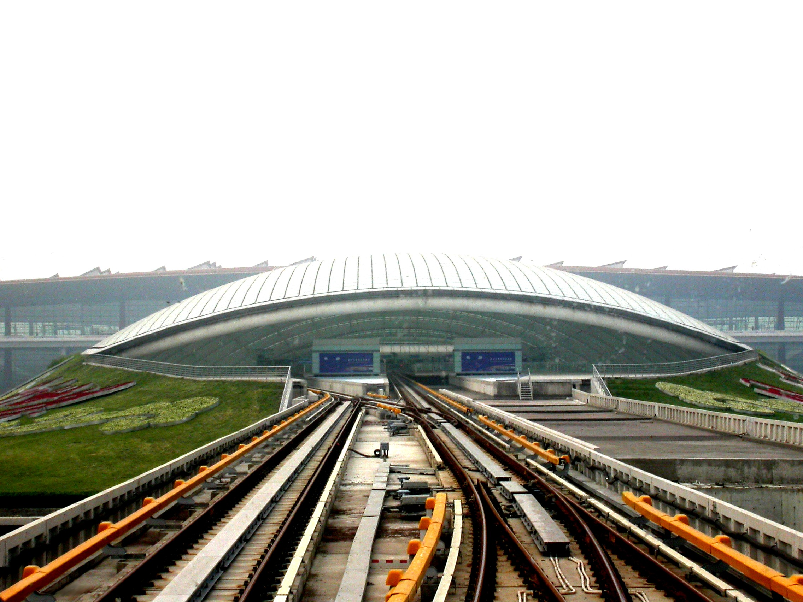

北京是什么？:
北京是中国的首都。北京是中国的教育，文化，经济中心。 北京有十六个区, 和二百八十九个城镇。 北京是中国第四人口最密集的城市。北京比纽约大得多。
北京人是谁？:
北京的人口是一千九 百多万人。 很多的北京人是 汉族人。 北京有 大约一千二百万 汉族人。很多人相信儒家思想。他们说北京话。北京也有满族人和 回族 人。有些满族 人是佛教徒。回族人是穆斯林。

北京最好 的 买东西的地方是燕莎和国贸商场，西单大街和天安门广场的王府井和前门大街。
吃饭:
北京最好的最有名的烤鸭餐厅是“全聚德。那里你可以买北京烤鸭。
北京烤鸭是北京（的）最好的菜。很多人觉得 北京烤鸭很好吃。
北京有炸酱面。北京的炸酱面有很好吃的面，猪肉和蔬。在 海碗居 餐厅你应该吃。
北京人吃涮羊肉。北京人也喜欢是北京火锅。这个菜 有蔬菜和面条，也有芝麻和等调味。你可以在 东来顺 餐厅 吃。
北京有皇家美食的传统。仿膳饭庄有菜，如酿肉碎芝麻包子;而婉抖晃，甜美的干豌豆和糖制成。
北京也有 宫保鸡丁。很多中国人喜欢这个菜。 宫保鸡丁又好吃又辣。
北京最好 的 买东西的地方是燕莎和国贸商场，西单大街和天安门广场的王府井和前门大街。
天气:
北京有 四个季节。北京的春天很短比纽约的春天一点儿. 北京的夏天很长和热。但是北京还很漂亮。 北京的秋天也很那么舒服。 可是，北京的冬天又冷又长。 所以你们应该九月去北京。
你应该带:
你应该带毛衣，运动鞋，围巾，信用卡。